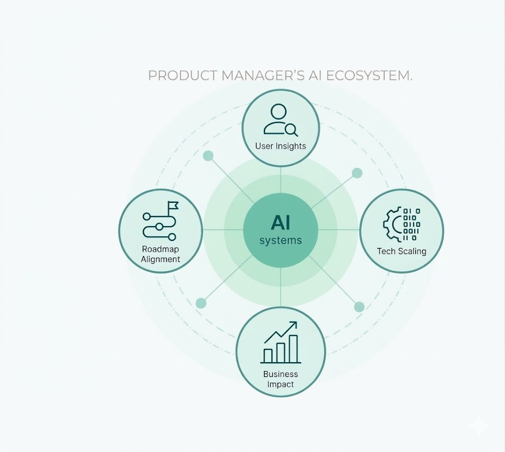

Build with confidence. Ship with clarity.
5
AI Products Shipped
10+
Years of Impact

Hello, I'm Fábio — an operations-turned-product leader who builds AI capabilities inside enterprise systems at scale.
Builder
I design and ship AI products—image generation, catalog classification, operational copilots—inside platforms serving 2M+ B2B customers across 20+ markets.
Bridge
I sit between AI/data teams, product teams, and commercial stakeholders, ensuring everyone works from the same picture and AI actually reaches production.
Architect
I care about the system under the hood—layered architectures separating AI intelligence from user experience, designed for rapid experimentation without disrupting operations.
"It follows the business rules very well. The descriptions and instructions are clear and contextual. I truly believe this tool can reduce the number of times partners reach out to us to resolve issues."
Enterprise Platform User
Operations Team
Capabilities
Most of my work falls into a few patterns. If you see yourself in one of these, let's talk.
When you need someone to turn AI experiments into production features, I build the frameworks—from MVP to scale—that let data teams and product teams ship together without stepping on each other.
When your internal platforms serve 1,000+ users across 20+ markets, I own the user experience end-to-end—catalog management, content publishing, fulfillment config—making enterprise tools people actually want to use.
When you have data but no AI in production, I design the layered systems—separating model serving from user experience—that let you experiment fast while keeping enterprise reliability.
When your teams run on manual processes, I build the pipelines and copilots that cut effort by 67%, automate audience selection, and turn 46-minute setups into 3-minute workflows.
Selected Works
AI and platform initiatives I designed and led inside a Fortune 500 B2B ecosystem.
Context
Marketing assets for B2B campaigns were produced by external agencies—expensive, slow, impossible to personalize at scale.
What was needed
A way to generate compliant brand assets at scale from minimal inputs.
What I did
Built an AI image generation pipeline through 8 development iterations—brand book extraction, reference images, multi-product composition, natural language post-editing.
What changed
50x cost reduction. Under 7 minutes per 3 iterations. Scalable personalization unlocked across markets.
Context
Millions of SKUs across multiple business units needed manual classification against a structured taxonomy. Years of backlog.
What was needed
AI-powered classification and enrichment pipeline at enterprise scale.
What I did
Built pipeline that groups raw SKUs into structured product clusters, classifies against platform taxonomy, and auto-enriches product attributes.
What changed
95% completeness, 98% brand accuracy. 11k SKUs grouped into 860 structured products. Onboarding: 3 months to 2 weeks.
Context
Platform users needed internal support to configure fulfillment settings, troubleshoot issues and understand platform features. Heavy dependency on support teams.
What was needed
A self-service AI assistant that follows business rules accurately and delivers clear, contextual guidance.
What I did
Developed GenAI copilot specialized in operational configuration—contextual Q&A, step-by-step troubleshooting, business rule compliance.
What changed
~80% positive user feedback. Partners resolving configuration issues autonomously. Reduced operational dependency.
Context
Campaign setup for digital communications involved multiple manual steps: strategy definition, audience selection, parametrization and platform integration.
What was needed
End-to-end automation pipeline from strategy input to delivery platform integration.
What I did
Built pipeline: strategy ingestion, automated audience segmentation, platform-ready config generation, direct delivery platform integration.
What changed
67% effort reduction. 100% audience selection automated. 80% of campaigns fully automated end-to-end.
Context
Content publishing across global markets was painfully slow and fragmented across multiple tools and processes.
What was needed
Unified CMS + DAM experience for all global markets.
What I did
Delivered unified content publishing platform consolidating workflows, asset management, and multi-market configuration.
What changed
46 minutes to 3 minutes per content publication setup, deployed across all global markets.
Context
Fulfillment configuration needed to support both ABI and third-party partners across 20 countries with 100+ distribution centers.
What was needed
Delivery platform from zero to production, integrated with the global B2B commerce app.
What I did
Built delivery configuration microservices, inventory integration, delivery date logic. 100+ DDC integrations. Front-end discovery and development.
What changed
85% order adoption. R$25MM annual revenue. 20 countries supported. Platform scaled for both ABI and partners.
"I was asked to make a configuration adjustment affecting thousands of points of sale—I could make the adjustment thanks to the copilot."
Partner Operations Specialist
Enterprise B2B Platform
Approach
A structured framework for proving value fast without disrupting operations.
01
It starts with what hurts. I map the current process, identify where AI can replace manual work, and build a focused experiment in ~2 weeks to prove the hypothesis before touching production.
02
Next, I test with real users and real data. The PoC gets refined over ~6 weeks, measuring actual value capture. Go/No-Go gates ensure we only continue what works.
03
Once validated, I run the change management to make it sustainable, then enable the solution as a platform-level feature. Clear handover, documentation, KPI tracking.
"I've been using the Copilot and it's been helping me a lot. I'll keep using it a lot!"
Operations Team Lead
Platform User
Group Product Manager — Internal Platforms & AI
São Paulo, BR • 2025 – Present
Logistics Product Manager — Fulfillment Platform
São Paulo, BR • 2021 – 2024
Data Product Manager — Logistics
São Paulo, BR • 2020 – 2021
Corporate Trainee — Procurement
São Paulo, BR • 2018 – 2020
Education
Inteli — Institute of Technology and Leadership
2025 – Present
University of São Paulo (USP) — Polytechnic School
2017
Eberhard Karls Universität Tübingen, Germany
2015
Lufkin High School, Texas, USA
2007